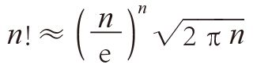
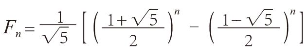

数学和科学杂志经常通过读者调查的方式，评选出最美的数学公式。结果，名列榜首的无一例外是莱昂哈德·欧拉提出的“欧拉公式”：
eiπ + 1 = 0
有人把它称作“上帝的公式”，因为组成这个公式的可能是数学领域最重要的5个数字：0和1是算术的基础，π是三角学中最重要的数字，e是微积分中最重要的数字，i可能是代数中最重要的数字。而且，这个概念运用了加法、乘法和幂次方等基本运算。我们对0、1和π已经不陌生了，但还需要通过本章的学习，掌握无理数e和虚数i的概念。希望大家读完本章的内容之后，可以熟练地掌握这个公式的含义，认为它跟1 + 1 = 2一样简单（至少不会觉得它比cos 180°= –1更难理解）。
在这里，我把有资格竞选“最美公式”的其他数学公式介绍给大家。这些公式大多会出现在本书中，有的我们在前文中已经讨论过了，有的则会出现在本书的后续章节中。下面的第一和第二个公式的提出者也是欧拉。
1．在任意多面体（由平面、直线和顶点组成的立体图形）中，其顶点数V、棱数E和面数F满足：
V – E + F = 2
例如，立方体有8个顶点、12条棱和6个面，满足V – E + F = 8 –12 + 6 = 2。
2．1 + 1 / 4 + 1 / 9 + 1 / 16 + 1 / 25 + … = π2 / 6
3．1 + 1 / 2 + 1 / 3 + 1 / 4 + 1 / 5 + …= ∞
4．0.999 99…= 1
5．计算n!近似值的斯特林公式：

6．确定斐波那契数列的第n个数字的比内公式：
